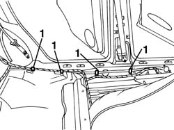
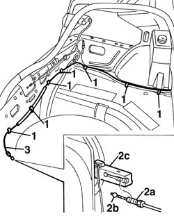
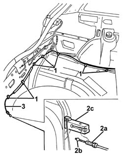

7025C32 fuel filler flap catch control - r+r
- Path
- Procedures > 70 FITTINGS > 7025 COMPARTMENT LIDS > 7025C various flaps (exterior) > 7025C32 fuel filler flap catch control - r+r
- Kind
- repair procedure (removal / refitting; the operation number is the code)
- Applies to
- all engines; all production periods
- Interactive page
- https://sloeber94.github.io/elrnDB-a156/en/#/3238750
Applies to: all engines; all production periods
 Removing
Removing
 Refitting
Refitting7040L40 front compartment scuff strip - r r (let side).
- 7040L44 rear compartment scuff strip - r r (let side).
7040H36 central trim lower element - r r (let side).
7050A20 one-piece rear seat cushion - r r
7045A10 l/h or r/h front seat (one) - r+r (let side).
5010C44 air diffuser to rear seat - r+r
7025C26 fuel filler flap catch control - r+r
7040B10 load platform (luggage platform) trim - r+r
7040B22 luggage compartment/load platform moulding - r+r
7040B18 l/h or r/h side trim (one) of luggage compartment/load platform - arrange (let side).
1. Release the transmission cable from the retaining clips along the left side panel.

Applies to: all engines; all production periods
1. Release the transmission cable from the retaining springs in the luggage compartment.
2. Disconnect the adjustable mounting (2a) and the retainer for the cable (2b) from the fuel flap opening device (2c).
3. Recover the transmission cable.

Applies to: all engines; all production periods
Refitting
RemovingCheck that the cable is undamaged.
Refit the transmission cable in its seating in the car.
Connect the retainer for the cable and the adjustable mounting to the fuel flap opening device.
Fix the transmission cable to the retaining springs in the luggage compartment.
Fix the transmission cable to the retaining springs, along the left side panel.
Adjust the position of the cable via the adjustable mounting for the fuel flap opening device.
Check that the opening control works properly.
7040B18 l/h or r/h side trim (one) of luggage compartment/load platform - arrange (let side).
7040B22 luggage compartment/load platform moulding - r+r
7040B10 load platform (luggage platform) trim - r+r
7025C26 fuel filler flap catch control - r+r
5010C44 air diffuser to rear seat - r+r
7045A10 l/h or r/h front seat (one) - r+r (let side).
7050A20 one-piece rear seat cushion - r r
7040H36 central trim lower element - r r (let side).
- 7040L44 rear compartment scuff strip - r r (let side).
7040L40 front compartment scuff strip - r r (let side).
Check that the cable is undamaged.
Refit the transmission cable in its seating in the car.
Connect the retainer for the cable and the adjustable mounting to the fuel flap opening device.
Fix the transmission cable to the retaining springs in the luggage compartment.
Fix the transmission cable to the retaining springs along the left side panel.
Adjust the position of the cable via the adjustable mounting on the fuel flap opening device.
Check that the opening control works properly.
Applies to: all engines; all production periods; only with equipment: Station Wagon
Removing
Refitting7040L40 front compartment scuff strip - r r (left side)
- 7040L44 rear compartment scuff strip - r r (left side)
7040H36 central trim lower element - r r (left side)
7050A22 rear seat cushion - r+r (left side)
7045A10 l/h or r/h front seat (one) - r+r (left side)
5010C44 air diffuser to rear seat - r+r (left side)
7025C26 fuel filler flap catch control - r+r
7040B22 luggage compartment/load platform moulding - r+r
7040B15 (One), rear side trim mounting BRACKET left or right - R.R . (left side)
7040B28 PET transport PROTECTION and load carrying compartment COVER COMBINATION BLIND - R.R.
7050A47 SIDE PANEL (one) for rear seat BACKREST., left or right - R.R . (left side)
7040B30 l/h or r/h side support (one) for load platform cover blind - arrange (left side)
7040B06 side trim (one) lh or rh, load compartment/load platform - r r (left side)
1. Release the transmission cable from the retaining clips along the left side panel.
Applies to: all engines; all production periods; only with equipment: Station Wagon
1. Release the transmission cable from the retaining clips in the load compartment.
2. Disconnect the adjustable mounting (2a) and the retainer for the cable (2b) from the fuel flap opening device (2c).
3. Remove the transmission cable from the car.

Applies to: all engines; all production periods; only with equipment: Station Wagon
Refitting
RemovingCheck that the transmission cable is not damaged.
Position the transmission cable in its housing in the vehicle.
Connect the retainer for the cable and the adjustable mounting to the fuel flap opening device.
Fix the transmission cable using the retaining springs in the load carrying compartment.
Fix the transmission cable using the retaining springs along the left side panel.
7040B06 side trim (one) lh or rh, load compartment/load platform - r r (left side)
7040B30 l/h or r/h side support (one) for load platform cover blind - arrange (left side)
7050A47 SIDE PANEL (one) for rear seat BACKREST., left or right - R.R . (left side)
7040B28 PET transport PROTECTION and load carrying compartment COVER COMBINATION BLIND - R.R.
7040B15 (One), rear side trim mounting BRACKET left or right - R.R . (left side)
7040B22 luggage compartment/load platform moulding - r+r
7025C26 fuel filler flap catch control - r+r
5010C44 air diffuser to rear seat - r+r (left side)
7045A10 l/h or r/h front seat (one) - r+r (left side)
7050A22 rear seat cushion - r+r (left side)
7040H36 central trim lower element - r r (left side)
- 7040L44 rear compartment scuff strip - r r (left side)
7040L40 front compartment scuff strip - r r (left side)
Topics linked from this page (15)
- 5010C44 air diffuser to rear seat - r+r
- 7025C26 fuel filler flap catch control - r+r
- 7040B06 side trim (one) lh or rh, load compartment/load platform - r r
- 7040B10 load platform (luggage platform) trim - r+r
- 7040B15 (One), rear side trim mounting BRACKET left or right - R.R .
- 7040B18 l/h or r/h side trim (one) of luggage compartment/load platform - arrange
- 7040B22 luggage compartment/load platform moulding - r+r
- 7040B28 PET transport PROTECTION and load carrying compartment COVER COMBINATION BLIND - R.R.
- 7040B30 l/h or r/h side support (one) for load platform cover blind - arrange
- 7040H36 central trim lower element - r r
- 7040L40 front compartment scuff strip - r r
- 7045A10 l/h or r/h front seat (one) - r+r
- 7050A20 one-piece rear seat cushion - r r
- 7050A22 rear seat cushion - r+r
- 7050A47 SIDE PANEL (one) for rear seat BACKREST., left or right - R.R .